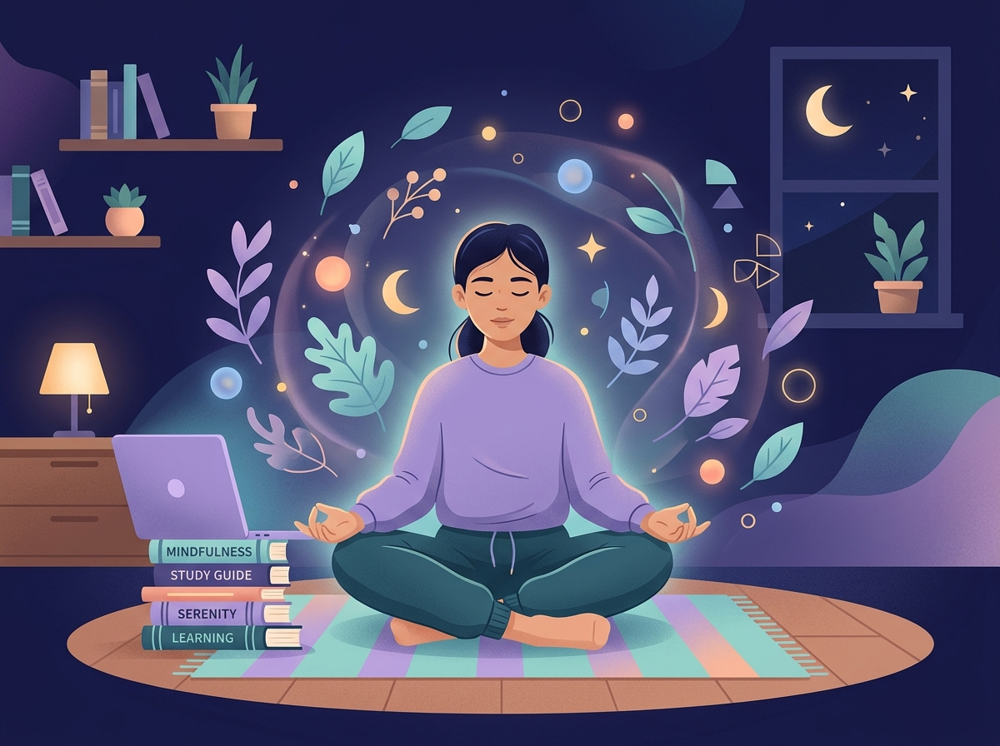

Saúde mental para estudantes
Estude com equilíbrio. Viva com leveza.
O Mente Leve reúne ferramentas simples e gratuitas para cuidar da sua mente durante a rotina de estudos: respirar melhor, entender suas emoções, focar sem se esgotar e saber onde pedir ajuda.
- 0ciclos de respiração
- 0registros de humor
- 0sessões de foco

Escolha por onde começar
-
Respiração guiada
Técnicas 4-7-8, quadrada e coerente com animação visual e voz em texto.
-
Rastreador de humor
Registre como se sente e acompanhe seu padrão emocional da semana.
-
Foco e tempo
Timer Pomodoro e lista de tarefas para estudar sem sobrecarga.
-
Anti-burnout escolar
Autoavaliação de esgotamento, dicas práticas e pausas ativas.
-
Rede de apoio
Exercício de ancoragem 5-4-3-2-1 e contatos de ajuda gratuitos.
01 · Respiração guiada
Respire. Seu corpo agradece.
Respirar devagar ativa o sistema nervoso parassimpático e reduz a ansiedade em poucos minutos. Ideal antes de provas ou apresentações.
Selecione uma técnica e pressione Iniciar.
Ciclo 0 de 4
02 · Rastreador de humor
Como você está se sentindo agora?
Nomear emoções é o primeiro passo para lidar com elas. Seus registros ficam salvos apenas neste navegador.
Seus últimos 7 dias
Histórico
03 · Gestão de tempo e estresse
Foco no que importa, pausa no que cansa.
A técnica Pomodoro divide o estudo em blocos curtos com pausas, evitando a fadiga mental e aumentando a concentração.
Pronto para focar.
Sessões de foco hoje: 0
Tarefas de estudo
04 · Prevenção do burnout escolar
Cansaço que não passa? Vamos olhar com carinho.
O burnout escolar é um esgotamento causado por excesso de cobrança e pouco descanso. Faça a autoavaliação e veja dicas práticas.
Gerador de pausa ativa
Precisa de um respiro?
Clique no botão para receber uma sugestão de pausa de 2 a 5 minutos.
Dicas contra o burnout
Selecione um cartão para ver a dica.
05 · Rede de apoio
Você não está sozinho.
Em momentos de crise, técnicas de ancoragem ajudam a voltar ao presente. E pedir ajuda é um ato de coragem.
Ancoragem 5-4-3-2-1
Use seus sentidos para sair da espiral de ansiedade. Avance no seu ritmo.
5
coisas que você pode ver
Olhe ao redor e nomeie cinco objetos. Repare nas cores e formas.
Contatos de ajuda gratuitos
-
CVV - Centro de Valorização da VidaApoio emocional 24h, sigilo total188
-
SAMUEmergências médicas192
-
CAPSCentro de Atenção Psicossocial do SUS, procure o mais próximoSaiba mais (abre em nova aba)
-
Chat CVVPrefere escrever? Converse onlineAbrir chat (abre em nova aba)